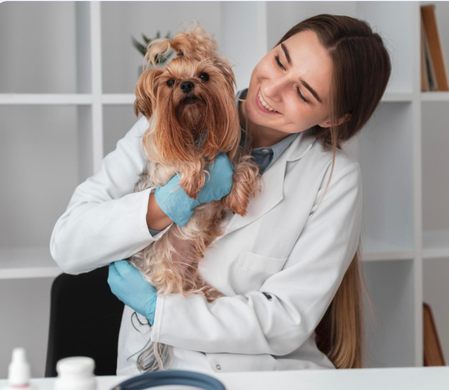

O Cuidado que seu pet precisa
O melhor atendimento da região do Porto.


Ideal para acompanhar o do estado de saúde do seu bichinho
Equipe qualificada para atender em caso de emergência 24h
Garantir a imunidade do seu pet é sinônimo de amor.
A melhor maneira e identificação em caso de fuga ou para viajar
Na Clínica Veterinária Vet Porto transformamos cuidado em carinho e saúde em sorrisos, porque cada latido e
miado merece uma vida cheia de amor e bem-estar.
- Doutora Filipa